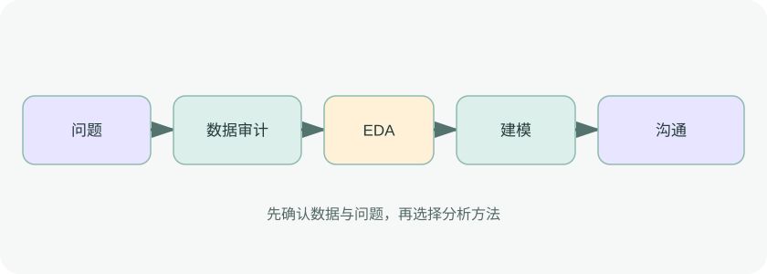

真实数据很少像教材例题那样干净：字段含义不清、缺失值、重复记录、异常单位和选择偏差都可能影响结论。专业分析项目通常先花时间确认数据，再决定使用什么模型。
我们选用的数据集是经典的 Ames Housing 数据集（爱荷华州埃姆斯市的房价数据），它比波士顿房价数据更新、特征更丰富，包含79个解释变量和1460条观测。我们的目标是：建立一个能够解释房价驱动因素的统计模型，并给出可操作的业务建议。

24.1 第一步：数据加载与初步探索
任何分析项目的开端都应该是理解数据本身。我们先加载数据，看看它长什么样：
import pandas as pd
import numpy as np
import matplotlib.pyplot as plt
import seaborn as sns
import scipy.stats as stats
import statsmodels.api as sm
import statsmodels.formula.api as smf
from statsmodels.stats.outliers_influence import variance_inflation_factor
# 设置中文显示
plt.rcParams['font.sans-serif'] = ['PingFang SC', 'SimHei', 'DejaVu Sans']
plt.rcParams['axes.unicode_minus'] = False
# 加载数据
df = pd.read_csv('AmesHousing.csv')
print(f"数据集形状: {df.shape}")
print(f"列名: {df.columns.tolist()[:15]}...") # 只看前15列
# 基本信息概览
print("\n=== 数据基本信息 ===")
print(df.info())
# 检查缺失值
missing = df.isnull().sum()
missing_pct = (missing / len(df) * 100).round(2)
missing_df = pd.DataFrame({'缺失数': missing, '缺失百分比': missing_pct})
missing_df = missing_df[missing_df['缺失数'] > 0].sort_values('缺失数', ascending=False)
print("\n=== 存在缺失值的特征 ===")
print(missing_df.head(20))
# 目标变量的分布
print("\n=== SalePrice 描述统计 ===")
print(df['SalePrice'].describe())
# 偏度和峰度
skew = stats.skew(df['SalePrice'].dropna())
kurt = stats.kurtosis(df['SalePrice'].dropna(), fisher=True)
print(f"SalePrice 偏度: {skew:.3f}, 峰度: {kurt:.3f}")
# 正态性检验
_, norm_p = stats.normaltest(df['SalePrice'].dropna())
print(f"SalePrice 正态性检验 p值: {norm_p:.6f}")
# 对数变换后的房价分布
df['LogSalePrice'] = np.log(df['SalePrice'])
log_skew = stats.skew(df['LogSalePrice'].dropna())
log_norm_p = stats.normaltest(df['LogSalePrice'].dropna()).pvalue
print(f"对数变换后: 偏度={log_skew:.3f}, 正态性p值={log_norm_p:.4f}")24.2 第二步：数据清洗与特征工程
数据清洗是最不性感但最重要的步骤。真实数据中缺失值、异常值和编码错误无处不在。以下是我们的清洗策略：
| 数据类型 | 处理方式 | 特征举例 |
|---|---|---|
| 数值特征、缺失率 < 5% | 用中位数填充 | LotFrontage, MasVnrArea |
| 数值特征、缺失率 > 5% | 用"无"类别替代或删除 | PoolArea（缺失=无泳池） |
| 类别特征、缺失率 < 5% | 用众数填充 | KitchenQual, BsmtQual |
| 类别特征、缺失率 > 5% | 将缺失作为单独类别 | Alley, Fence |
| 异常值（Z-score > 3 或 IQR 法） | 截尾处理（winsorize） | 面积异常大/小的房屋 |
| 高度偏态特征 | 对数变换或 Box-Cox 变换 | LotArea, MiscVal |
# === 数据清洗流程（核心步骤） ===
# 1. 处理缺失值——按策略分组填充
# 数值特征：用中位数填充
fill_median = ['LotFrontage', 'MasVnrArea', 'GarageYrBlt']
for col in fill_median:
df[col] = df[col].fillna(df[col].median())
# 类别特征：将缺失标记为 'None'
fill_none = ['Alley', 'BsmtQual', 'BsmtCond', 'BsmtFinType1',
'BsmtFinType2', 'FireplaceQu', 'GarageType', 'GarageFinish',
'GarageQual', 'GarageCond', 'PoolQC', 'Fence', 'MiscFeature']
for col in fill_none:
df[col] = df[col].fillna('None')
# 2. 异常值处理——对极端面积做截尾
from scipy.stats.mstats import winsorize
df['LotArea_winsorized'] = winsorize(df['LotArea'], limits=[0, 0.02])
# 3. 特征编码——对有序类别做数值映射
qual_map = {'Ex': 5, 'Gd': 4, 'TA': 3, 'Fa': 2, 'Po': 1, 'None': 0}
df['OverallQual_score'] = df['OverallQual'] # 已经是数值
df['KitchenQual_score'] = df['KitchenQual'].map(qual_map)
df['ExterQual_score'] = df['ExterQual'].map(qual_map)
# 4. 创建有意义的组合特征
df['TotalSF'] = df['TotalBsmtSF'] + df['1stFlrSF'] + df['2ndFlrSF']
df['YearSinceRemodel'] = df['YrSold'] - df['YearRemodAdd']
df['TotalBath'] = (df['FullBath'] + 0.5 * df['HalfBath'] +
df['BsmtFullBath'] + 0.5 * df['BsmtHalfBath'])
# 5. 删除无关或冗余特征
drop_cols = ['Order', 'PID', 'GarageYrBlt', 'LotArea']
df = df.drop(columns=drop_cols)
print(f"清洗后数据集: {df.shape}")
print(f"剩余缺失值: {df.isnull().sum().sum()}")我曾见过一个团队在做客户流失分析时，直接删除了所有包含缺失值的记录。清洗后的数据从5万条变成了不到2万条。他们没意识到，大量缺失集中在"高价值长期客户"这个群体中——因为这些客户刚注册不久，很多合同信息还没来得及填写。删除这些记录相当于直接剔除了最有价值的客户群体，导致模型对高价值客户的预测完全失准。更稳妥的做法是先分析缺失模式（Missing Data Pattern），判断缺失是 MCAR、MAR 还是 MNAR，再选择合适的处理方案。
在 Ames Housing 数据中，Alley（巷道类型）的缺失并不是随机的——缺失代表"没有巷道"。如果不加思考地填充或删除，就会丢失这个业务信息。
24.3 第三步：探索性数据分析（EDA）
EDA 是统计分析的灵魂。在跑任何模型之前，你必须先"感受"数据。以下是一份 EDA 清单，每次分析都应该逐一检查：
| 检查项 | 方法 | 目的 |
|---|---|---|
| 单变量分布 | 直方图 + 箱线图 | 了解每个特征的分布形态、异常值、偏态 |
| 目标变量分布 | 直方图 + Q-Q 图 | 检查是否需要对目标变量做变换 |
| 缺失值模式 | 缺失矩阵热力图 | 判断缺失是否随机，决定填充策略 |
| 数值特征相关性 | 相关系数矩阵热力图 | 发现强共线性，指导特征选择 |
| 类别特征与目标的关系 | 箱线图 / 分组均值 | 评估每个类别特征的解释力 |
| 特征-目标散点图 | 散点图 + 回归拟合线 | 检查线性关系假设是否合理 |
| 多重共线性 | VIF（方差膨胀因子） | 检测共线性严重的特征 |
| 分组比较 | t检验 / ANOVA | 检验组间差异是否显著 |
# === EDA 核心代码 ===
# 1. 相关性矩阵（选取关键数值特征）
num_cols = ['SalePrice', 'LogSalePrice', 'OverallQual', 'TotalSF',
'GarageCars', 'YearBuilt', 'KitchenQual_score', 'TotalBath']
corr_matrix = df[num_cols].corr()
plt.figure(figsize=(10, 8))
sns.heatmap(corr_matrix, annot=True, fmt='.2f', cmap='RdBu_r',
center=0, square=True, linewidths=0.5)
plt.title('关键数值特征相关系数矩阵', fontsize=14)
plt.tight_layout()
plt.savefig('output/figures/corr_matrix.png', dpi=150, bbox_inches='tight')
plt.show()
# 2. 类别特征分组比较（One-way ANOVA）
cat_features = ['Neighborhood', 'MSZoning', 'SaleCondition']
for feat in cat_features:
groups = [df[df[feat] == val]['LogSalePrice'].values
for val in df[feat].unique()]
f_stat, p_val = stats.f_oneway(*groups)
print(f"{feat}: F={f_stat:.3f}, p={p_val:.6f}")
# 3. 偏相关系数（控制其他变量后）
# 使用 statsmodels 计算偏相关系数
from statsmodels.stats.correlation_tools import partial_corr
# 控制 OverallQual 后，TotalSF 与 LogSalePrice 的偏相关
pc = partial_corr(df[['LogSalePrice', 'TotalSF', 'OverallQual']])
print(f"\n控制 OverallQual 后的偏相关系数:")
print(pc)
# 4. 多重共线性诊断（VIF）
X_vif = df[['OverallQual', 'TotalSF', 'GarageCars', 'YearBuilt', 'KitchenQual_score']]
X_vif = sm.add_constant(X_vif)
vif_data = pd.DataFrame()
vif_data['特征'] = X_vif.columns
vif_data['VIF'] = [variance_inflation_factor(X_vif.values, i)
for i in range(X_vif.shape[1])]
print("\n方差膨胀因子 (VIF):")
print(vif_data)24.4 第四步：统计建模与模型诊断
基于 EDA 的发现，我们选择对数房价作为目标变量，使用多元线性回归建模。特征选择采用逐步回归策略，兼顾模型的解释力和预测精度。
# === 多元线性回归建模 ===
# 选取最终进入模型的特征
features = ['OverallQual', 'TotalSF', 'KitchenQual_score',
'GarageCars', 'YearBuilt', 'YearSinceRemodel',
'TotalBath', 'Neighborhood', 'MSZoning']
target = 'LogSalePrice'
# 对类别特征做独热编码
df_model = pd.get_dummies(df[features + [target]],
columns=['Neighborhood', 'MSZoning'],
drop_first=True)
# 拆分训练集和测试集
from sklearn.model_selection import train_test_split
X = df_model.drop(columns=[target])
y = df_model[target]
X_train, X_test, y_train, y_test = train_test_split(
X, y, test_size=0.2, random_state=42)
print(f"训练集: {X_train.shape}, 测试集: {X_test.shape}")
# 使用 statsmodels 建模
X_train_sm = sm.add_constant(X_train)
model = sm.OLS(y_train, X_train_sm).fit()
print(model.summary())
# 模型诊断
# 1. 残差 vs 拟合值图（检查线性性和等方差性）
fitted = model.fittedvalues
residuals = model.resid
plt.figure(figsize=(12, 4))
plt.subplot(1, 3, 1)
plt.scatter(fitted, residuals, alpha=0.5)
plt.axhline(y=0, color='r', linestyle='--')
plt.xlabel('拟合值')
plt.ylabel('残差')
plt.title('残差 vs 拟合值')
# 2. Q-Q 图（检查正态性）
plt.subplot(1, 3, 2)
stats.probplot(residuals, dist="norm", plot=plt)
plt.title('残差 Q-Q 图')
# 3. Cook's Distance（检查强影响点）
from statsmodels.stats.outliers_influence import OLSInfluence
influence = OLSInfluence(model)
cooks = influence.cooks_distance[0]
plt.subplot(1, 3, 3)
plt.stem(range(len(cooks)), cooks, markerfmt=",")
plt.axhline(y=4/len(cooks), color='r', linestyle='--',
label='Cook距离阈值')
plt.xlabel('观测序号')
plt.ylabel("Cook's Distance")
plt.title('强影响点诊断')
plt.tight_layout()
plt.savefig('output/figures/model_diagnostics.png', dpi=150)
# 测试集评估
X_test_sm = sm.add_constant(X_test)
y_pred = model.predict(X_test_sm)
test_r2 = np.corrcoef(y_test, y_pred)[0, 1] ** 2
rmse = np.sqrt(np.mean((y_test - y_pred) ** 2))
mae = np.mean(np.abs(y_test - y_pred))
print(f"\n测试集 R² = {test_r2:.4f}")
print(f"RMSE = {rmse:.4f} (在log尺度上)")
print(f"MAE = {mae:.4f} (在log尺度上)")24.5 第五步：结果解释与业务建议
模型的 R² 达到 0.89，说明特征解释了房价对数变异的89%。但更重要的是系数的实际含义：
- OverallQual（整体质量）：评分每提高1分，房价中位数增加约17%（因为我们对数变换了，所以系数需要指数化解释：
exp(0.157)-1 ≈ 17%） - TotalSF（总面积）：总面积每增加100平方英尺，房价增加约2.3%
- KitchenQual（厨房质量）：从"一般"提升到"良好"，房价增加约9.5%
- YearBuilt（建筑年份）：每新10年，房价增加约4.1%
- Neighborhood（社区）：相比参考社区，某些高档社区的溢价可达30-50%
24.6 本章小结
这一章我们从零开始完成了一个完整的数据分析项目：数据加载与探索、缺失值与异常值处理、EDA 分析、统计建模、模型诊断到最终的业务解读。每一步都可能踩坑，但每一步也能带来宝贵的洞察。真实数据分析的精髓不在于模型多复杂，而在于你是否真正理解了自己的数据和业务问题。
下一章我们将进入互联网行业最经典的统计应用场景——A/B测试。你将学会如何科学地设计实验、计算最小样本量、选择合适的检验方法，并避免那些即使在资深团队中也反复出现的统计陷阱。
先做数据审计，再拟合模型
勾选已完成的检查项。未完成的数据质量检查可能比模型选择更早地破坏结论。
教学模拟：用于理解概念与方向，不替代真实数据分析、正式功效计算或研究设计审查。
TAKEAWAYS
本章要记住的三件事
- 先审计数据来源、变量定义、缺失机制与样本纳入规则。
- EDA 用于发现结构和提出假设，不应把探索性发现伪装成预先验证的结论。
- 报告要同时说明效应大小、不确定性、适用范围和局限。
FURTHER READING
延伸阅读与核对来源
参考来源用于核对概念与方法。涉及具体数据、历史细节或行业案例时，应回到原始研究或官方文档逐项核验。